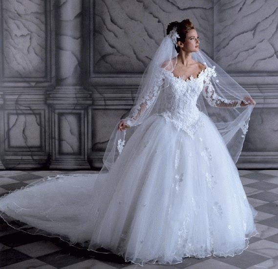

|
|
| |
|
| MONTANDO SEU CONVITE |
 Voçê já deve ter ouvido a expressão: ' a primeira impressão é a que fica ' então é facil descobrir qual o primeiro passo para impressionar aos convidados ainda antes do casamento: Voçê já deve ter ouvido a expressão: ' a primeira impressão é a que fica ' então é facil descobrir qual o primeiro passo para impressionar aos convidados ainda antes do casamento: O convite, ele é muito mais que um simples pedaço de papel, já que este fala por sí. Ele deve ter os estilo do casal levando em conta modelo papel cor e texto. A quantidade certa Deve-se encomendar aproximadamente 20% a mais, para que haja um excedente à serem enviados às pessoas lembradas na última hora, tendo assim também a possibilidade de se substituir pessoas que não possam comparecer por outros convidados. Sujestões de frases para seu convite - 'Assim como a nuvem só existe se chover, assim como o poeta só é grande se sofrer, assim viver sem amor não é viver, não ha você sem mim e eu não existo sem você .'
- 'Se dois lábios não podem beijar, dois olhos se beijam numa troca de olhar.'
- O verdadeiro amor nunca se desgasta. Quanto mais se dá mais se tem.'
- 'Devemos imitar o eterno exemplo dos rios: dão suas águas ao mar e nunca ficam vazios.'
- 'O amor não conciste em olhar um para o outro, mas sim em olhar juntos para mesma direção.'
- 'Juntos não há estrelas que não podemos alcançar, nem sonhos que não podemos realizar.'
- 'O amor tudo sofre, tudo crê, tudo suporta, tudo espera.' ( 1 Coríntios 13:7 )
- 'Vivam um para o outro e ambos para Deus'( Masaharu Taniguchi )
|
| |
| BUFFET |
 Buffet: “Qualidade que se põe à mesa” Buffet: “Qualidade que se põe à mesa”
Na hora de escolher o buffet, é importante que se observem alguns aspectos para que se tenha uma recepção de sucesso.
- O buffet deve ser contratado no mínimo 8 meses antes do casamento antes mesmo da Igreja, já que existem bem mais Igrejas do que locais para recepção.
- Deve-se observar se o ambiente é agradável, se a infra-estrutura (localização, tamanho, funcionalidade, higiene, etc...) é adequada ao tipo do evento em questão.
-Peça referências, e exija um contrato especificando tudo o que foi combinado, ex: tipo de cardápio, valores das bebidas, quantia de garçons e valores sobre honorários excedentes, taxas extras etc...
- Feita a escolha do local ideal você já estará apta à escolher a decoração p/ o salão para que as cores desta não venham à entrar em choque com as cores predominantes do local, como paredes, pilares etc...
- Já existem buffets que incluem a decoração das mesas em seu orçamento, cobrando uma taxa extra para isto. Observe as vantagens e possíveis desvantagens ao adquirir este serviço.
Cercando-se destes cuidados, você já estará mais segura para que imprevistos de última hora não venham tirar o brilho de um momento tão especial |
| |
| MÚSICA |
 Música, “o toque que faz a diferença” Música, “o toque que faz a diferença”
Todo casal tem aquela música que parece inspirada em sua história e que será lembrada por toda sua vida. Por isto mesmo é que a música se faz tão importante num casamento, é ela que emociona e contagia a todos e
que enriquece o vídeo para ser apreciada depois fazendo com que as emoções voltem à tona.
Este serviço deve ser contratado no mínimo com 8 meses antes do evento, principalmente em meses como maio, setembro e dezembro onde a demanda de eventos é muita. Já em agosto e outros dias da semana que não sejam o sábado é possível encontrar profissionais até mesmo 30 dias antes do evento. Valores: No caso da cerimônia religiosa o valor cobrado por instrumento é de aproximadamente R$ 150,00.
Já na festa o valor médio é de R$ 600,00 podendo este valor ultrapassar três mil reais dependendo da banda à ser contratada. Repertório: Deve-se ter um cuidado especial principalmente com a música para cerimônia religiosa, pois igrejas como a católica só permite músicas sacras ou clássicas, são poucas igrejas que permitem variações.
|
| |
| BELEZA |
c u i d a n d o d a s u a p e l e Para você ficar com uma pele linda, suave e jovial, comece já a estabelecer uma alimentação saudável, uma rotina com exercícios físicos e cuidado diário com a pele. Não abra a mão das suas horas de sono e mantenha sempre o bem humor. Você vai ver que, no dia do seu casamento, sua pele além de estar um veludo, estará radiando alegria e satisfação. Por isso, estamos deixando algumas dicas que irão ajudá-la nestes cuidados: e x e r c í c i o s f í s i c o s Os exercícios físicos, além de serem essenciais para você chegar ao seu peso e corpo ideal, dão uma sensação de bem-estar que se estampa no rosto. Os exercícios físicos ajudam a reduzir o stress, à medida, que ajudam a liberar toda a tensão do dia-a-dia. Enquanto você pratica exercícios, você está liberando toxinas, "líquidos sujos" do seu organismo, e está trazendo mais oxigênio para o seu corpo. Beba muita água, pois à medida que seu corpo libera os "líquidos sujos", seu organismo precisa de "líquidos novos" para se reabastecer. Entretanto, no caso de pessoas sedentárias, o organismo ficará reaproveitando o mesmo líquido para as mesmas funções e, assim, a pele acaba ficando pobre em nutrientes. a l i m e n t a ç ã o s a u d á v e l A pele é resultado da sua alimentação, à medida que os nutrientes que estão presentes no corpo vão nutrindo sua pele. Portanto, se sua alimentação não é saudável, sua pele não terá acesso a esses nutrientes que poderiam deixá-la muito mais bonita. Por isso, aproveite o tempo que antecede o seu casamento para adotar uma dieta balanceada, rica em frutas, verduras e legumes. Além de conterem importantes vitaminas e minerais que neutralizam os radicais livres, estes alimentos são ricos em fibras, que ajudam no funcionamento do seu intestino. Não se esqueça de beber muita água. Ela hidrata e purifica o organismo. d e s c a n s e Cada pessoa tem um tempo de sono ideal. Não existem regras. O importante é deixar claro que sono e descanso são as melhores maneiras do corpo neutralizar os radicais livres. É nesta hora que o organismo se restaura e sua pele se refaz. É comum nesta fase, você estar atarefada com todos os preparativos do casamento, mas não abra mão de uma noite bem dormida e horas de descanso. O descanso é tão importante quanto o trabalho. l i m p e , n u t r a e p r o t e j a s u a p e l e Uma pele saudável começa com uma boa limpeza. Lave o rosto pela manhã e à noite, de preferência com um sabonete líquido que respeite as características de sua pele. Antes de sair de casa você pode passar creme hidratante que contenha filtro solar. Para noite, existem cremes nutrientes, geralmente, com ação mais profunda.Se sua pele for oleosa, opte por cremes em gel. Uma a duas vezes por semana, você pode esfoliar a sua pele, a fim de remover as células mortas.Em casos de acne, não esprema – pode causar cicatrizes e manchas. O melhor é visitar um médico, saber as causas da acne e escolher um tratamento eficaz. m a n t e n h a s e m p r e o b o m h u mo r É comum nesta fase de preparativos haver certos conflitos entre membros da família, divergência entre os noivos, porque afinal, são tantos detalhes, e cada um quer ajudar com sua opinião. Mas o bom humor sempre ajudará a contornar discussões de forma pacífica e harmoniosa. Nada de brigas. Lembre-se que a sua pele é importante, mas muito mais do que isso, a sua expressão facial. Sorria sempre. d i a d a n o i v a Você já se imaginou passando um dia de princesa, em que todos estarão se dedicando para que você esteja relaxada e mais linda do que nunca! Pois aproveite e relaxe. Estes salões começam o dia com um saudável café da manhã com sucos e frutas e incluem, além de massagens e banhos relaxantes, a depilação completa, manicures e pedicures, cabelos, maquiagem, hidratação, almoço e lanches. Os preços variam de salão para salão e, na maioria das vezes, já contam com os testes de maquiagem e penteado. Você já sai do salão pronta, diretamente para a igreja e fica longe do nervosismo e agitação que poderá estar reinando em sua casa. |
| |
| CASAMENTO JUDAICO |
O Dia do Casamento
O dia do casamento judaico para os noivos é como um Yom Kipur pessoal. É passado em jejum, oração, atos de bondade (tsedacá) e reflexão espiritual.
A tradição nos diz que neste dia D'us perdoa completamente ambos pelas transgressões cometidas em suas vidas, para que possam começar suas vidas de casados em um estado totalmente puro
O Casamento
Os pais que acompanham o noivo e a noiva até a chupá seguram velas acesas. Já que os noivos são comparados a rei e rainha, devem ser escoltados por um séquito.
Nossos sábios nos contam que no casamento do primeiro casal, os anjos Michael e Gavriel escoltaram Adam e o levaram até Chava. Também Moshé e Aharon levaram o povo de Israel para o "casamento" com D'us, ao redor do Monte Sinai. Assim como D'us foi acompanhado pelas duas Tábuas da Lei e por miríades de anjos, os noivos são acompanhados pelos pais.
Os acompanhantes que levam as velas ficavam à direita e à esquerda dos noivos. A mão direita representa bondade e a esquerda, firmeza. Direita e esquerda simbolizam o relacionamento entre o casal que deve ser contrabalançam com amor e firmeza - saber dar e não procurar só receber.
Aharon, que procurava a paz e o amor entre as pessoas, personifica a harmonia que deve existir entre marido e mulher; e Moshê, que recebeu a Torá, representa as leis e regras que devem reger a nossa vida. Leis e regulamentos devem ser obedecidos num espírito de união e cessão, entrando o casal sempre em acordo.
|
| |
| TRANSPORTE |
Uma chegada Triunfal Se até nos contos de fada Cinderela chegou até o baile em grande estilo, a chegada da noiva requer uma atenção especial.
Deve-se então pensar com carinho no transporte da noiva para a Igreja até o momento de levar o casal até a recepção, já que a data requer uma chegada triunfal.
Para cerimônias formais e elegantes os carros antigos são uma opção muito adequada, podendo estes ter a vantagem de escolha entre cores mais chamativas ou neutras.
Já as limusines para o uso durante o dia deve-se escolher cores claras, enquanto para a noite as pretas tradicionais são a melhor pedidas.
Verifique se o tamanho interno do veículo será compatível para que seu vestido não corra riscos de almaços no vestido, mesmo porque se o vestido não estiver bem ‘acomodado’ o mesmo acontecerá com você.
O posicionamento dos ocupantes do carro deve ser os seguintes:
O pai da noiva no banco de trás, atrás do motorista e a noiva no lado oposto.
O noivo também vai atrás do motorista com a noiva ao lado, lembrando que em ambas as situações ao estacionar o veículo este posicionamento ajudará no deslocamento da noiva que descera no lado da calçada
|
| |
| BODAS |
| 01 ano |
Bodas de Algodão |
| 02 anos |
Bodas de Papel |
| 03 anos |
Bodas de Trigo |
| 04 anos |
Bodas de Cera |
| 05 anos |
Bodas de Madeira ou Ferro |
| 06 anos |
Bodas de Perfume |
| 07 anos |
Bodas de Lã |
| 08 anos |
Bodas de Papoula ou Cobre |
| 09 anos |
Bodas de Louça ou Cerâmica |
| 10 anos |
Bodas de Estanho ou Zinco |
| 11 anos |
Bodas de Coral ou Aço |
| 12 anos |
Bodas de Seda |
| 13 anos |
Bodas de Junquilho ou Linho |
| 14 anos |
Bodas de Chumbo ou Marfim |
| 15 anos |
Bodas de Cristal |
| 16 anos |
Bodas de Safira |
| 17 anos |
Bodas de Rosa |
| 18 anos |
Bodas de Turquesa |
| 19 anos |
Bodas de Cretone |
| 20 anos |
Bodas de Porcelana |
| 25 anos |
Bodas de Prata |
| 30 anos |
Bodas de Pérola |
| 35 anos |
Bodas de Coral |
| 40 anos |
Bodas de Rubi ou Esmeralda |
| 45 anos |
Bodas de Platina |
| 50 anos |
Bodas de Ouro |
|
60 anos |
Bodas de Diamante |
| 70 anos |
Bodas de Cobre |
| 75 anos |
Bodas de Brilhante |
| 80 anos |
Bodas de Carvalho | |
| |
| VESTIDO DE NOIVA |
 A grande maioria das noivas já se imaginam no vestido, desde a data do noivado. Tudo faz parte da cultura e da educação, o tão sonhado dia em que elas verdadeiramente se tornam lindas princesas. Sabendo da importância deste momento, nossa equipe separou algumas dicas e alguns modelos para você começar a sonhar!!! Nem sempre o vestido da noiva foi branco e os costumes estão mudando e muitas noivas usam outras cores, até mesmo o vermelho.
Aliás, a cor vermelha é usada nos casamentos orientais, principalmente na China e na Índia. - Use esta regra, que não tem erro. Se o tecido for nobre e caro como cetim, seda, renda, veludo e musseline, o modelo deve ser mais simples, justamente para realçar a beleza do tecido. Se o tecido for mais simples, pode abusar de um modelo mais trabalhado.
- Antigamente exigia-se que o vestido tivesse decote discreto, mangas compridas, mas hoje, não se dá mais importância a estes detalhes.
- Um vestido simples é sempre mais elegante. Evite exagerar nos enfeites, babados, pedrarias, bordados. Lembre-se de que você não é o "bolo de noiva".
- Se o casamento for de manhã ou à tarde, seja ainda mais discreta e prefira um tom gelo ou creme ao "branco total".
- O véu pode ser de renda ou de tule, curtinho ou com muitos metros de comprimento, com tiras ou guirlandas de flores miúdas. Vai depender do seu gosto ou da escolha que fizer juntamente com seu cabeleireiro.
- Os sapatos devem ser forrados de cetim, combinando com seu vestido.
- Use meias transparentes.
- Usar ou não luvas fica a seu critério.
- Leve apenas o anel de noivado no anular direito. Mas é possível se fazer uma concessão: fique livre para usar um colarzinho de pérolas se combinar com o vestido.
- Nas mão apenas o buquê. Pode ser o antigo, redondo e pequeno, o tradicional buquê de flores de laranjeira ou mesmo uma elegante cascata de orquídeas. Você é a dona da festa, portanto, escolha o que combinar com o seu vestido.
- Lembre-se de que, pela tradição, para ter sorte você deve ir com alguma coisa velha, alguma coisa nova, alguma coisa emprestada e alguma coisa azul. E não de esqueça de colocar uma moedinha no sapato.
- E nada vai lhe trazer mais sorte se, no dia do seu casamento, aparecer um lindo arco-íris no céu.
|
| |
|
 |
Outros Eventos |
|
| |
|
|
|
|
|
|
|
|
|
|
|
|
|
|
| |
|